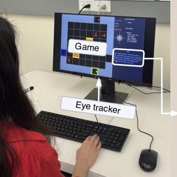
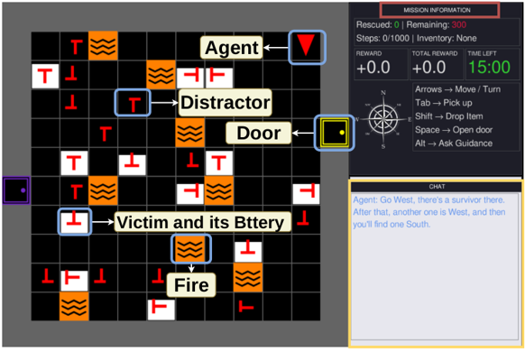
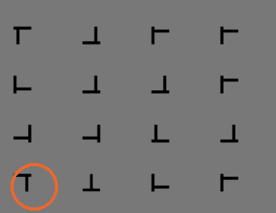

LLM-Mediated Human–AI Interaction in Search and Rescue:
Impact of Expertise on Attentional Allocation
Human performance, visual attention, and expertise under LLM guidance
Oklahoma State University
Human–AI Setting in Critical Situation
Operators must locate and recover people while conditions change quickly.
- Missions occur in challenging environments
- Decisions must be made under time pressure
- Need reliable partner to help humans
Research Questions and Contribution
- Performance: Does LLM guidance improve task outcomes?
- Attention: How does guidance change visual attention and eye-tracking metrics?
- Expertise: Does expertise moderate these effects?
- Testbed: A controlled simulation supports repeatable human–AI teaming research.

We study how humans and AI process information together, using eye tracking to inform adaptive AI for the future.
Study Design In Brief

13 Participants
3 Trials each (randomized)
2 + 1 LLM + baseline
15 min or 1,000 moves
Task: rescue victims efficiently in a partially observable grid while victim health deteriorates.
ALT requests advice and reveals victim health for 5 seconds.
Game Play
Expertise Level

- Expertise labeling: K-means clustering (K = 2) grouped participants into expert vs. novice
How The LLM Was Prompted
Guidance Style
- You are a search-and-rescue coordinator giving calm, human-like radio guidance to the operator.
- Instructions must be directional and action-focused, always using North, South, East, West, with no coordinates, step counts, or visible reasoning.
- Output either a sparse one-sentence instruction or a detailed 3–4 sentence radio briefing, always concise, natural, and wrapped strictly as <START> … <END>.
Priority
- Prioritize visible reachable survivors who are still saveable, nearest first.
- From the current state {obs}, choose one immediate objective by prioritizing the nearest reachable visible saveable survivor, then the next saveable survivor if relevant.
- Otherwise choose the best remaining alive victim, then the nearest reachable survivor or key, or finally explore visible areas that may open a new path.
Mission Rules
- Follow mission and environment rules: rescue all survivors.
- Use matching keys for locked doors, unlocked doors can be opened, carry only one key, avoid lava.
- Never mention unreachable objects. Final instruction must be rule-compliant.
- Grid-based world: each cell represents an object such as empty space, wall, victim, lava, door, or key.
- Reachability check: BFS determines which targets are reachable and their distance from the player.
- Models: OpenAI and Gemini.
Task and Eye-tracking Features
| Feature | What it shows |
|---|---|
| Victims per step | Rescue efficiency over time |
| Total reward | Overall task performance |
| Saved victims | Mission success |
| Fixation count | How often the participant focused on an area |
| Fixation duration | How long the participant looked at one area |
| Saccade duration | Duration of fast eye movements |
| Pupil diameter SD | Variation in pupil size, related to workload |
| Game-area fixation time | Attention to the SAR environment |
| Chat-panel fixation time | Attention to the LLM guidance |
| AOI transitions | Switching gaze between game and chat |
Data Collection and Analysis
- Synchronized data streams via LSL (Lab Streaming Layer)
- Gaze and pupil data recorded with a Tobii eye tracker
Mixed-effects model: outcome = LLM condition + LLM × expertise + expertise + participant random intercept.
LLM Guidance Improved Performance
| Outcome | Effect | β | SE | q |
|---|---|---|---|---|
| Victims per step | LLM | 0.020 | 0.006 | < .01 |
| Expertise | 0.016 | 0.013 | ns | |
| LLM × Expertise | −0.009 | 0.010 | ns | |
| Total rewards | LLM | 267.143 | 90.203 | < .01 |
| Expertise | −17.714 | 135.183 | ns | |
| LLM × Expertise | 181.857 | 139.742 | ns | |
| Saved victims | LLM | 0.035 | 0.206 | ns |
| Expertise | 0.221 | 0.436 | ns | |
| LLM × Expertise | 0.435 | 0.320 | ns |
LLM Guidance Changed Visual Behavior
| Outcome | Effect | β | SE | q |
|---|---|---|---|---|
| Mean fixation | LLM | −19.326 | 6.216 | < .01 |
| Pupil-size SD | LLM | +0.122 | 0.014 | < .0001 |
| LLM × Expertise | −0.051 | 0.021 | < .05 | |
| Game-area | LLM | −0.184 | 0.023 | < .0001 |
| LLM × Expertise | +0.114 | 0.035 | < .01 | |
| Chat-area | LLM | +0.092 | 0.016 | < .0001 |
| Fixation count | LLM × Expertise | +0.815 | 0.342 | < .05 |
| Saccade count | LLM × Expertise | +0.961 | 0.325 | < .01 |
Results

Expertise Changes How Guidance Is Used
Experts
Maintained more engagement with the game under LLM support and showed stronger changes in visual scanning.
Novices
Shifted more attention away from the game, consistent with greater reliance on the guidance panel.
LLM guidance received
↓
Expert
Cross-checks guidance against the environment (scans, verifies)
Novice
Follows guidance directly
Limitations and Future Work
Limitations
- Small sample
- Simulated grid-world task
Future work
Trust & reliability Test how LLM errors affect operator responses and trust.
Adaptive guidance Tailor help using performance and physiological signals to reduce mental workload.
Situation awareness Use this data to infer workload, situational awareness, and human–AI interaction patterns.
Other domains Apply this approach to other human–AI teaming domains beyond search and rescue.
The next step is moving from static guidance toward reliable, adaptive human–AI teaming.

Thank you
Questions?

iHuman Lab · Oklahoma State University